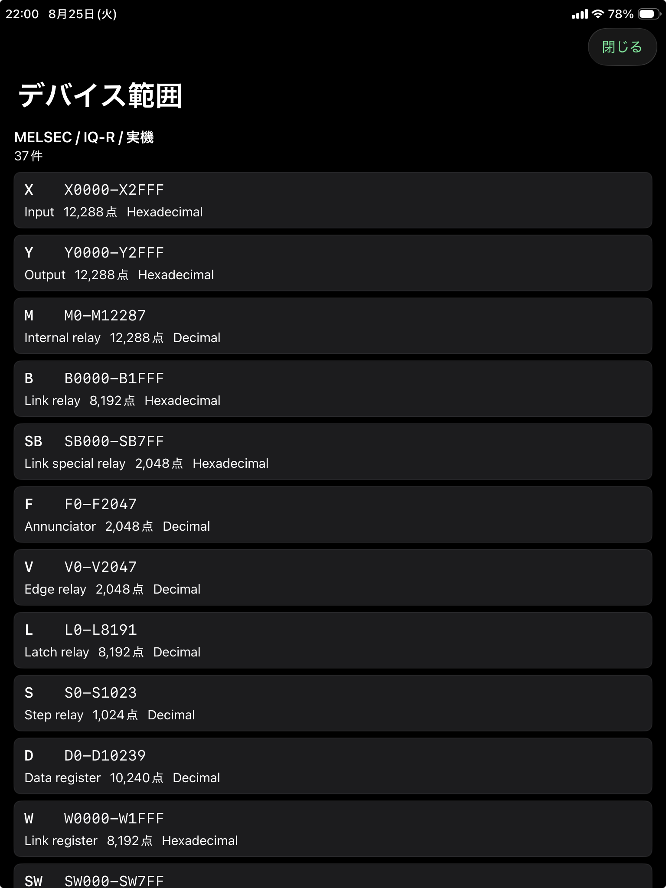

デバイス種別
X、Y、D、DM など、PLC 機種ごとに使用できるデバイス種別を表示します。
Device Range
選択中の CPU 機種で使用できるデバイス領域を確認します。監視や書込の対象アドレスを決める前の確認に使います。

X、Y、D、DM など、PLC 機種ごとに使用できるデバイス種別を表示します。
その CPU 機種で扱える番号範囲を確認します。範囲外のアドレスは監視や書込の対象にできません。
List 登録編集やタイムチャート登録で迷った場合は、先にこのページで有効範囲を確認してください。